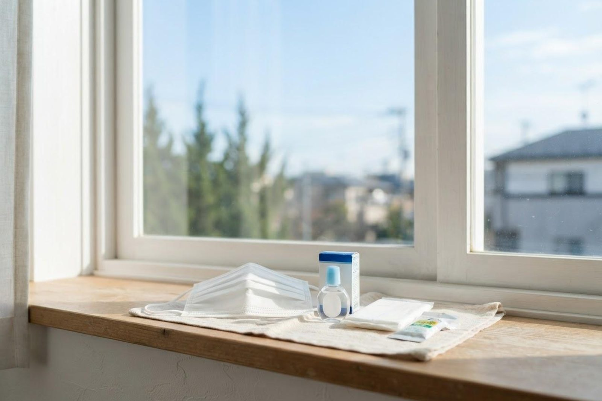

毎年、鼻水・くしゃみ・目のかゆみに悩まされます。花粉症は病院で相談したほうがいいですか？
A. 回答毎年同じ時期に鼻水・くしゃみ・鼻づまり・目のかゆみが繰り返し出る場合、花粉症（アレルギー性鼻炎・結膜炎）が考えられます。市販薬でも一時的に症状をやわらげることはできますが、症状が強い場合や長引く場合は、原因となるアレルゲンの特定や、症状に合わせた治療について相談するために、一度医療機関を受診することをおすすめします。

花粉症（アレルギー性鼻炎・結膜炎）とはどのような症状ですか？
花粉症は、スギやヒノキなどの花粉がアレルゲン（原因物質）となって起こるアレルギー疾患で、正式にはアレルギー性鼻炎・アレルギー性結膜炎と呼ばれます。主な症状は、水っぽい鼻水、繰り返すくしゃみ、鼻づまり、目のかゆみ・充血・涙目などで、のどのイガイガ感や咳を伴うこともあります。花粉が飛散する時期に毎年同じような症状が出るのが特徴とされています。
市販薬でのセルフケアには限界がありますか？
市販の内服薬や点鼻薬・点眼薬は、その時々の症状を和らげる目的では役立ちますが、体質そのものを改善するものではないとされています。また、症状の程度は人によって異なるため、市販薬だけで様子を見ているうちに症状が強くなったり、日常生活や仕事・学業に支障が出たりするケースもあります。「毎年つらいけれど市販薬でなんとかしている」という方も、一度症状の程度を医療機関で確認しておくと安心です。
医療機関で相談するメリットは何ですか？
医療機関では、問診や必要に応じた検査（血液検査など）により、症状の原因となっているアレルゲンを特定できる場合があります。原因がはっきりすることで、生活環境での対策や、症状・体質に合わせた治療方針を相談しやすくなります。また、症状の程度に応じた薬の選び方や、長期的な体質改善を目指す治療法についても相談できるのは、医療機関で相談する利点のひとつと考えられています。
どのような場合に受診を検討すればよいですか？
判断に迷われるときは、救急安心センター事業「＃7119」（岡山県内で利用できます）にご相談いただけます。総務省消防庁の「全国版救急受診アプリ（Q助）」も目安になります。
すぐに受診を検討してください
- くちびるや顔・まぶたが急に腫れる、のどが詰まる感じがする、全身にじんましんが出る（アナフィラキシーが疑われる状態です。呼吸が苦しい・意識がもうろうとするなどを伴う場合は119番も検討してください）
- 息苦しさや、ゼーゼー・ヒューヒューという呼吸音を伴う
- 果物や野菜を食べたあとに、口やのどのかゆみ・腫れが出る
- 鼻づまりで眠れない、強い頭痛や発熱を伴うなど、症状が急に強くなった
早めの受診をおすすめします
- 毎年同じ時期に鼻水・くしゃみ・鼻づまり・目のかゆみを繰り返している
- 市販薬を使っても症状が十分におさまらない、または効果が続かない
- 鼻づまりで眠りにくい、集中しにくいなど、日常生活や仕事・学業に影響が出ている
- そもそも症状の原因が花粉かどうかを確認したい
- 花粉が飛び始める時期が近く、症状が軽いうちに対策を相談しておきたい
上記のような場合は、一度当院のアレルギー科にご相談ください。
毎年の鼻水・くしゃみ・目のかゆみが気になる方は、お気軽にご相談ください
最終更新：2026年8月26日